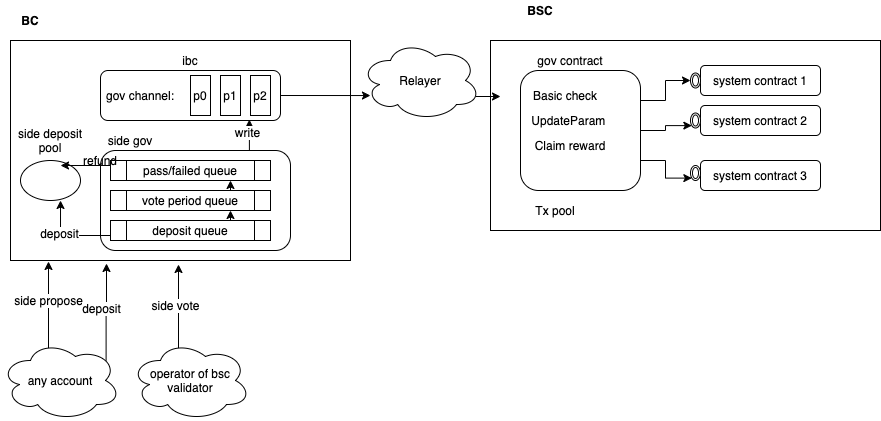

Governance of BSC
Motivation
There are many system parameters to control the behavior of the BSC:
-
All these parameters of BSC system contracts should be flexible: slashing threshold, cross-chain transfer fees, relayer reward amount and so on.
-
params of Staking/Slash/Oracle modules on BC
All these parameters will be determined by BSC Validator Set together through a proposal-vote process based on their staking. Such the process will be carried on BC, and the new parameter values will be picked up by corresponding system contracts via cross-chain communication if needed.
Design Principles
For BC:
-
Codebase reuse: Reuse most of the structure of proposal and vote, and the logic about propose and vote.
-
Cross chain package Available at once: The cross-chain package should be available once the proposal passed.
-
Native params change take place at breath block: The param change of Staking/Slash/Oracle modules on BC take place at breath block after the proposal passed.
For BSC:
-
Uniform interface. The contracts who are interested in these parameters only need to implement the same interface.
-
Extensible. When adding a new system contract, there is no need to modify any other contracts.
-
Failure toleration. Validators could vote to skip false proposals and go on.
-
Multiplexing. Now we have only parameters gov, but in the future, there will be more governance functions.
Workflow

Contract Interface
Every contract that wants to subscribe param change event, should implement the following interface: function updateParam(string key, bytes calldata value) external
Some following check must be done inside the interface:
- The msg sender must be the gov contract.
- Basic check of value. (length, value range)
An example implementation:
modifier onlyGov() {
require(msg.sender == GOV_CONTRACT_ADDR, "the msg sender must be the gov contract");
_;
}
function updateParam(string key, bytes calldata value) external onlyGov{
if (key == "relayerReward"){
require(value.length == 32, "the length of value is not 32 when update relayer_reward param");
uint256 memory paramValue = TypesToBytes.ToUint256(0, value);
require(paramValue >= MIN_RELAYER_REWARD, "the relayerReward is smaller than the minimum value");
require(paramValue <= MAX_RELAYER_REWARD, "the relayerReward is bigger than the maximal value");
relayerReward = paramValue；
}else{
require(false, "receive unknown param");
}
}
Gov Contract
Implement the cross chain contract interface: handlePackage(bytes calldata msgBytes, bytes calldata proof, uint64 height, uint64 packageSequence)
And do the following steps:
- Basic check. Sequence check, Relayer sender check, block header sync check, merkel proof check.
- Check the msg type according to the first byte of msgBytes, only param change msg type is supported for now. Check and parse the msg bytes.
- Use a fixed gas to invoke the updateParam interface of target contract. Catch any exception and emit fail event if necessary, but let the process go on.
- Claim reward for the relayer and increase sequence.
Workflow
There are many system parameters to control the behavior of the BSC:
-
All these parameters of BSC system contracts should be flexible: slashing threshold, cross-chain transfer fees, relayer reward amount and so on.
-
params of Staking/Slash/Oracle/IBC modules on BC
All these parameters will be determined by BSC Validator Set together through a proposal-vote process based on their staking. Such processes will be carried on BC, and the new parameter values will be picked up by corresponding system contracts via cross-chain communication when needed.
Fee Table
| Transaction Type | Fee | Fee For |
|---|---|---|
| Submit Smart Chain Proposal | 10 BNBs | Proposer |
| Smart Chain Proposal Deposit | 0.00125 BNB | Proposer |
| Smart Chain Proposal Vote | 1 BNB | Proposer |
| Relayer reward | 0.001 BNB | system reward pool |
Global Parameters
min-deposit: The threshold for submitting a proposal on mainnet is 1000BNB, and the threshold for submitting a proposal on testnet is 2000BNB
Commands
Query side chain proposals
| parameter name | example | comments | required |
|---|---|---|---|
| --chan-id | Binance-Chain-XXX | the chain id of binance chain | Yes |
| --side-chain-id | chapel | the id of side chain, default is native chain | Yes |
| --status | passed | filter proposals by proposal status, status: deposit_period/voting_period/passed/rejected | No |
| --voter | bnb1h9ymecpakr8p8lhchtah2xxx7x4xq099umclqu | filter by proposals voted on by voted | No |
## mainnet
./bnbcli gov query-proposals --side-chain-id bsc --trust-node --chain-id Binance-Chain-Tigris
## testnet
./tbnbcli gov query-proposals --side-chain-id chapel --trust-node --chain-id Binance-Chain-Ganges
Query side chain proposal
| parameter name | example | comments | required |
|---|---|---|---|
| --chan-id | Binance-Chain-XXX | the chain id of binance chain | Yes |
| --side-chain-id | chapel | the id of side chain, default is native chain | Yes |
| --proposal-id | 1 | proposalID of proposal being queried | Yes |
## mainnet
./bnbcli gov query-proposal --proposal-id 1 --side-chain-id bsc --trust-node --chain-id Binance-Chain-Tigris
## testnet
./tbnbcli gov query-proposal --proposal-id 1 --side-chain-id chapel --trust-node --chain-id Binance-Chain-Ganges
Query side chain parameters
| parameter name | example | comments | required |
|---|---|---|---|
| --side-chain-id | chapel | the id of side chain, default is native chain | Yes |
## mainnet
./bnbcli params side-params --side-chain-id bsc --trust-node
## testnet
./tbnbcli params side-params --side-chain-id chapel --trust-node
Submit cross chain param change proposal.
|parameter name | example | comments | required | | ------------- | ------ | ------- | --------- | | --chan-id | Binance-Chain-XXX | the chain id of binance chain | Yes | | --side-chain-id | chapel | the id of side chain, default is native chain | Yes | | --deposit | 200000000000:BNB | deposit of proposal | Yes | | --from | alice | Name or address of private key with which to sign | Yes | | --key | felonyThreshold | the parameter name on the side chain | Yes | | --target | 0x0000000000000000000000000000000000001001 | the address of the contract on side chain | Yes | | --title | "test csc change" | title of proposal | Yes | | --value | 0x000000000000000000000000000000000000000000000000000000000000001b | the specified value of the parameter on side chain, should encoded in hex | Yes | | --voting-period | 604800 | voting period in seconds (default 604800) | No |
## mainet
./bnbcli params submit-bscParam-change-proposal --key "felonyThreshold" --value "0x000000000000000000000000000000000000000000000000000000000000001b" --target 0x0000000000000000000000000000000000001001 --deposit 200000000000:BNB --voting-period 100 --side-chain-id bsc --title "test csc change" --from alice --trust-node --chain-id Binance-Chain-Tigris
## testnet
./tbnbcli params submit-bscParam-change-proposal --key "felonyThreshold" --value "0x000000000000000000000000000000000000000000000000000000000000001b" --target 0x0000000000000000000000000000000000001001 --deposit 200000000000:BNB --voting-period 100 --side-chain-id chapel --title "test csc change" --from alice --trust-node --chain-id Binance-Chain-Ganges
Submit cross chain channel management proposal.
| parameter name | example | comments | required |
|---|---|---|---|
| --chan-id | Binance-Chain-XXX | the chain id of binance chain | Yes |
| --side-chain-id | chapel | the id of side chain, default is native chain | Yes |
| --deposit | 200000000000:BNB | deposit of proposal | Yes |
| --from | alice | Name or address of private key with which to sign | Yes |
| --channel-id | 1 | the the channel id that want to manage | Yes |
| --enable | true | enable the channel or not (default true) | Yes |
| --title | "test csc change" | title of proposal | Yes |
| --voting-period | 604800 | voting period in seconds (default 604800) | No |
## mainnet
./bnbcli side-chain submit-channel-manage-proposal --channel-id 2 --enable=true --deposit 200000000000:BNB --voting-period 100 --side-chain-id bsc --title "test csc change" --from alice --trust-node --chain-id Binance-Chain-Tigris
## testnet
./tbnbcli side-chain submit-channel-manage-proposal --channel-id 2 --enable=true --deposit 200000000000:BNB --voting-period 100 --side-chain-id chapel --title "test csc change" --from alice --trust-node --chain-id Binance-Chain-Ganges
Submit side chain module param change proposal.
| parameter name | example | comments | required |
|---|---|---|---|
| --chan-id | Binance-Chain-XXX | the chain id of binance chain | Yes |
| --side-chain-id | chapel | the id of side chain, default is native chain | Yes |
| --deposit | 200000000000:BNB | deposit of proposal | Yes |
| --from | alice | Name or address of private key with which to sign | Yes |
| --title | "test csc change" | title of proposal | Yes |
| --sc-param-file | param.json | the file of Side Chain params (json format) | Yes |
| --voting-period | 604800 | voting period in seconds (default 604800) | No |
## mainnet
./bnbcli params submit-sc-change-proposal --sc-param-file param.json --deposit 200000000000:BNB --voting-period 100 --side-chain-id bsc --title "test proposal" --from delegator1 --trust-node --chain-id Binance-Chain-Tigris
## testnet
./tbnbcli params submit-sc-change-proposal --sc-param-file param.json --deposit 200000000000:BNB --voting-period 100 --side-chain-id chapel --title "test proposal" --from delegator1 --trust-node --chain-id Binance-Chain-Ganges
Vote for side chain proposal
| parameter name | example | comments | required |
|---|---|---|---|
| --chan-id | Binance-Chain-XXX | the chain id of binance chain | Yes |
| --side-chain-id | chapel | the id of side chain, default is native chain | Yes |
| --proposal-id | 1 | proposalID of proposal being queried | Yes |
| --option | Yes | vote option {yes, no, no_with_veto, abstain} | Yes |
## mainnet
./bnbcli gov vote --from alice --side-chain-id bsc --proposal-id 1 --option Yes --chain-id Binance-Chain-Tigris
## testnet
./tbnbcli gov vote --from alice --side-chain-id chapel --proposal-id 1 --option Yes --chain-id Binance-Chain-Ganges
Deposit for side chain proposal
| parameter name | example | comments | required |
|---|---|---|---|
| --chan-id | Binance-Chain-XXX | the chain id of binance chain | Yes |
| --side-chain-id | chapel | the id of side chain, default is native chain | Yes |
| --proposal-id | 1 | proposalID of proposal being queried | Yes |
| --deposit | Yes | amount of deposit | Yes |
## mainnet
./bnbcli gov deposit --from alice --side-chain-id bsc --proposal-id 1 --deposit 1000000000:BNB --chain-id Binance-Chain-Tigris
## testnet
./tbnbcli gov deposit --from alice --side-chain-id chapel --proposal-id 1 --deposit 1000000000:BNB --chain-id Binance-Chain-Ganges